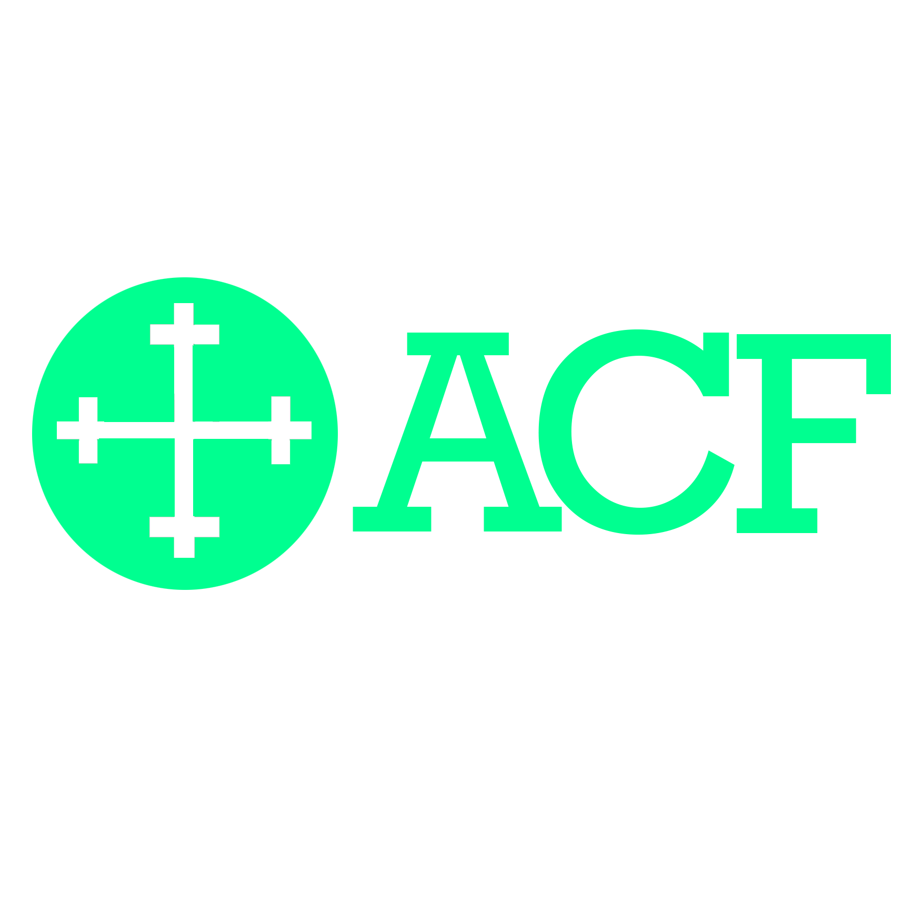
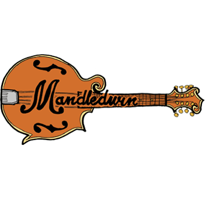
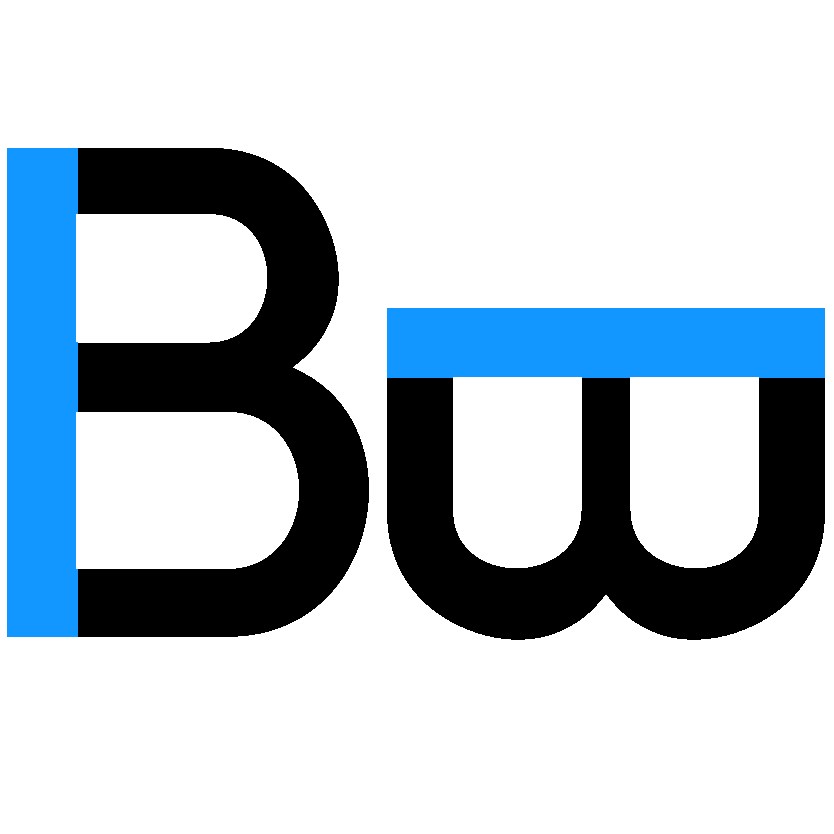

A logo I made for a dear friend. Let's called him "Z.H." Per his request, this is an all-purpose logo that offers freshness with soft greens and blues.
A logo design for Quikalarm, a fictitious alarm clock app that focuses on convenience and modernism.

A logo design for the Apostles College Fellowship, based out of The Church of the Apostles in Atlanta, GA. I worked with Apostles' College Coordinator to create a logo that includes both traditional and modern elements. The traditional coptic cross serves as a symbol for the crucifixion of Christ. Flat, vibrant green was used to achieve a modern aesthetic. The thinness of the cross conveys delicacy while the slab-serif typeface, Rockwell, shows strength.

The logo for my folk playlist, Mandledwin. Hand-drawn + Photoshop. You can check out the YouTube playlist here or give it a listen on Spotify.

A logo I made for a dear friend. Check out bradware.com.
The main logo for my GameBoy Advance game, Off Season. This logo was designed to display in 4-bit color. The challenge was to create a logo full of color that also showed depth in just 16 pixels by 16 pixels.
For more information about the game, check out the Off Season page.
For more information about the game, check out the Off Season page.
A logo I designed for a poster in my bedroom that represents a rising sun. It is inspired by the Criterion Collection logo animation which you can catch at the beginning of this video.